两个试验分别需要鉴定 慢病毒最佳MOI 和 最佳的干扰siRNA，其余的方法步骤一致。
过表达WNT5B：鉴定最佳MOI
MSCs转染过表达WNT5B慢病毒48h后，在倒置荧光显微镜下观察荧光反应，选择荧光效率最佳的MOI浓度。（细胞成活率必须高于80%）
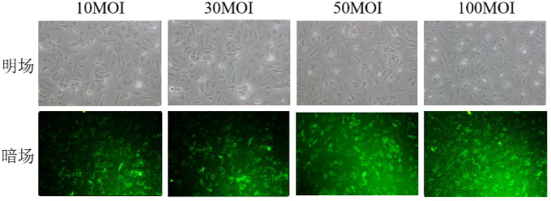
干扰WNT5B：鉴定最佳siRNA
分别用不同的siRNA构建转染复合物转染 MSCs，培养48-72h后收样，通过RT-qPCR和WB鉴定WNT5B的表达量和蛋白质产量。
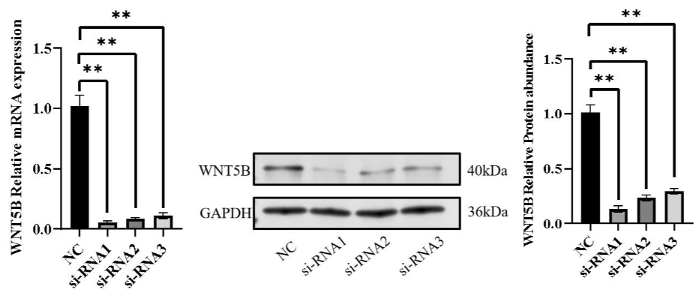
选取生长状态良好的 MSCs，按照 2ml/孔（ 个细胞）铺于 6 孔板上，细胞融合度达 80%后进行转染，48h 后收集细胞提取总 RNA 反转录为 cDNA
| 事件 | 试验组转染 Lenti-WNT5B（n=3） | 对照组转染 Lenti-Vector（n=3） |
|---|---|---|
| 37°C、5% CO₂培养 细胞融合度80% |
MOI=50 加入 Lenti-WNT5B 慢病毒 | 对照病毒 |
| 转染后24h | 换正常培养基 | 同左 |
| 转染后72h | 收样 | 同左 |
用 MSCs，以 cells/孔的密度接种于 96 孔板（100 μL 完全培养基/孔），37°C、5% CO₂培养至 80%融合度转染 Lenti-WNT5B（试验组 n=3）、Lenti-Vector（空载组 n=3）和 Control（对照组 n=3）。于转染后 12H、24H、48H、72H、96H 进行检测，每组设 3 个复孔
过表达WNT5B——Lenti-WNT5B
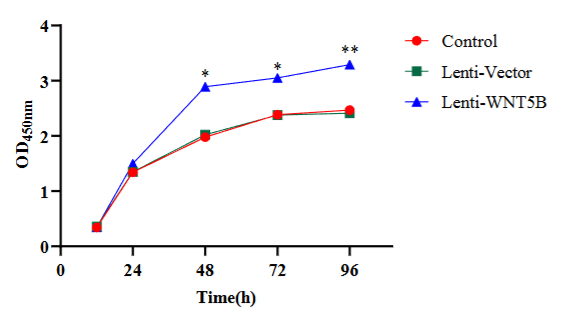
48H后Lenti-WNT5B组的应该显著高于其他两组干扰WNT5B——si-WNT5B
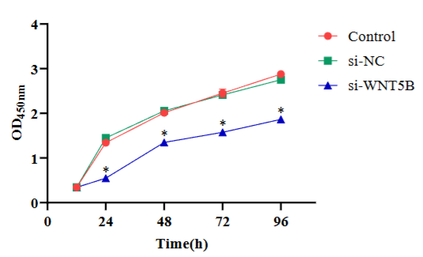
24H后si-WNT5B组的应该显著低于其他两组用 MSCs，按 cells/孔密度接种于 48 孔板（500 μL 完全培养基/孔），37°C、5% CO₂培养至 80%融合度转染 Lenti-WNT5B（试验组 n=3）、Lenti-Vector（空载组 n=3）和 Control（对照组 n=3），转染 24 h 后更换正常培养基，继续培养至 48 h。
过表达WNT5B——Lenti-WNT5B
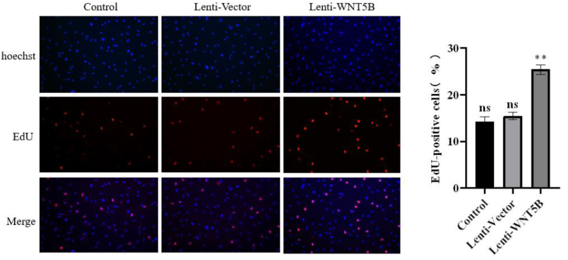
48H后Lenti-WNT5B组的应该显著高于其他两组干扰WNT5B——si-WNT5B
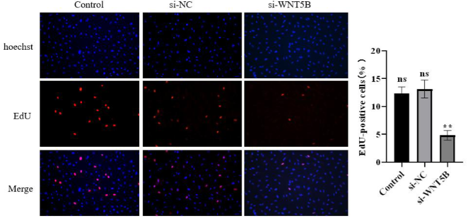
48H后si-WNT5B组的应该显著低于其他两组实验结果表明：
WNT5B 过表达显著增强其增殖能力，并伴随非经典 WNT/PCP信号通路关键分子 ROR2、CDC42、RAC1、JNK 的基因表达水平上调；反之，通过抑制 WNT5B 表达，鹿茸 MSCs 的增殖能力显著减弱，且上述通路相关基因表达同步下调。
即： WNT5B 通过激活非经典 WNT/PCP 信号通路正向调控鹿茸 MSCs 的增殖活性。
在此处只做了几个通路因子的基因表达差异，下一个实验中做蛋白质的验证
过表达WNT5B——Lenti-WNT5B
1.成骨分化标志物表达量
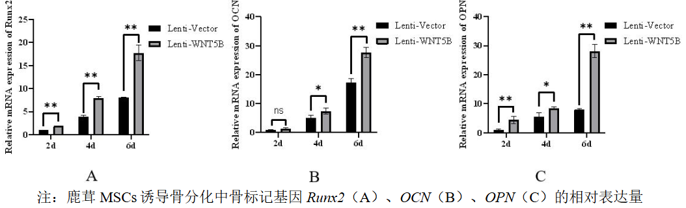
2d就在两组之间出现显著差异。4d后出现出现两组间显著差异。2.成纤维细胞标志物表达量
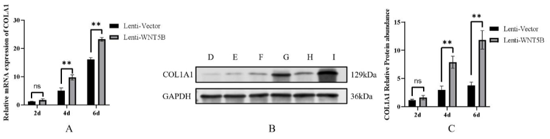
4d后，COL1A1的基因表达量和蛋白质表达量均出现组件极显著差异3.WNT/PCP途径通路基因的表征
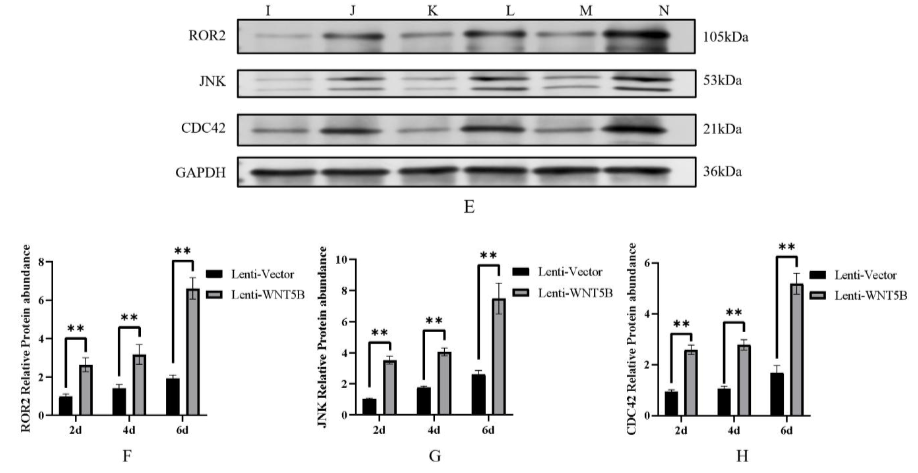
干扰WNT5B——si-WNT5B
1.成骨分化标志物表达量
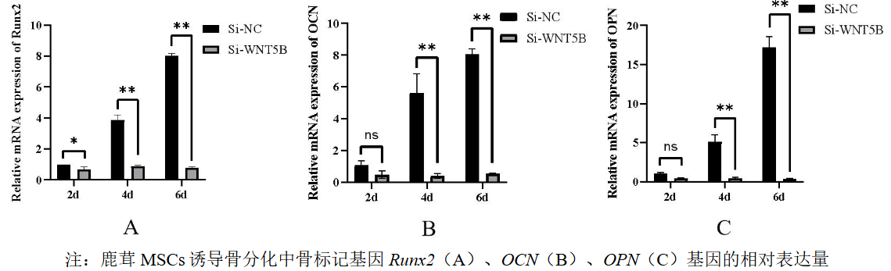
2d就在两组之间出现显著差异。4d出现两组之间的显著差异。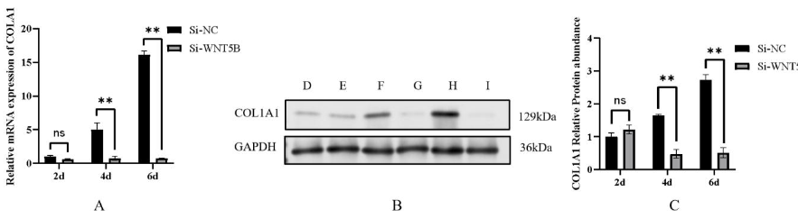
4d后，COL1A1的基因表达量和蛋白质表达量均出现组件极显著差异取 MSCs，按 cells/孔密度接种于 6 孔板（2mL 完全培养基/孔）；
| 事件 | 试验组（慢病毒转染组n=3） | 对照组（未转染/空载体组n=3） |
|---|---|---|
| 37°C、5% CO₂培养 细胞融合度60% |
MOI=50 加入 Lenti-WNT5B 慢病毒 | 加入对照病毒 |
| 37°C、5% CO₂ 孵育 6 h |
弃病毒液，置换为成骨诱导培养基 | 同左 |
| 转染后24h | 倒置荧光显微镜观察转染效率 | 同左 |
36H 半量换液一次。2d、4d、6d（n=3）收集样本（1）弃原培养基，用 PBS 洗 3 次，每次 5 min
（2）用细胞固定液固定 20 min，PBS 洗 3 次，每次 5 min
（3）BCIP/NBT 染色工作液染色 30 min，室温避光
（4）蒸馏水洗 3 次，每次 5 min，显微镜下观察拍照。
实验结果：
2d、4d、6d过表达组的ALP染色光密度和ALP基因表达量两个层面均出现显著高于对照组。4d、6d过干扰组的ALP染色光密度和ALP基因表达量两个层面均出现显著低于对照组，2d时无显著差异。